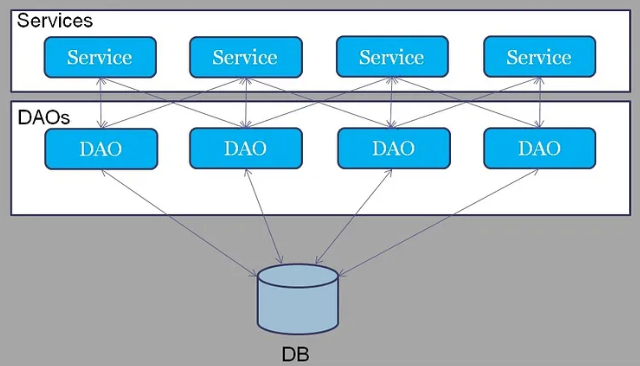
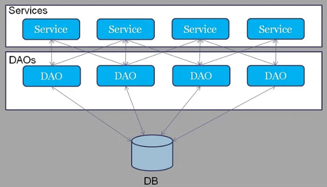
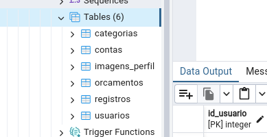
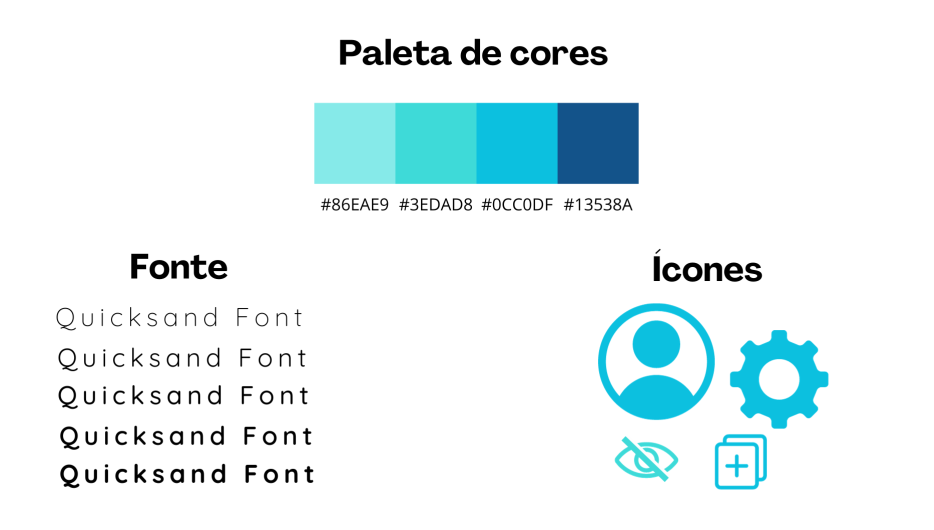
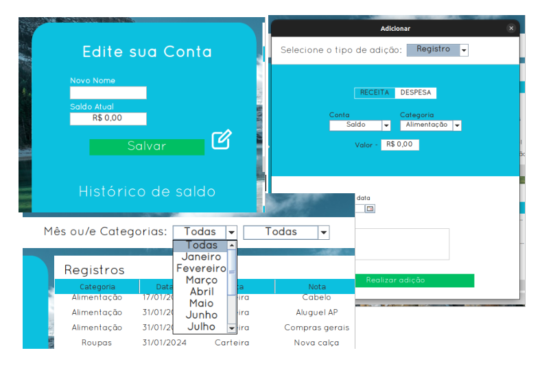
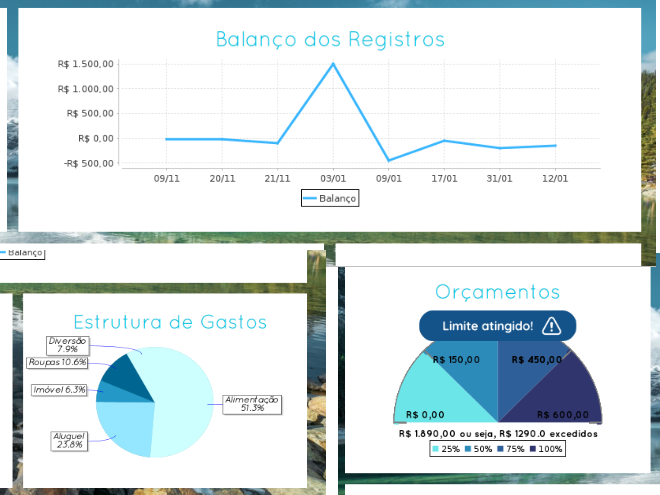

Desenvolvendo um aplicação desktop de controle de Finanças Pessoais em Java, com Java Swing e PostgreSQL.
Na disciplina de Programação Orientada a Objetos ministrada em minha faculdade (Universidade Estadual de Santa Catarina - UDESC), foi apresentada como proposta de trabalho individual final a implementação de um programa em três etapas. Na primeira fase, serão modeladas e implementadas, em Java, as camadas de dados e negócio; na segunda, a interface gráfica. Por fim, na terceira etapa, ocorrerá a projeção e implementação do banco de dados para a aplicação, denominada persistência.
Neste post, detalharei as etapas do projeto, do backend ao frontend, com o tema Sistema de Finanças. Trata-se de uma aplicação ligeiramente complexa que visa ser um programa de gerenciamento de finanças pessoais. Nessa aplicação, o usuário adiciona suas receitas e despesas em categorias específicas, permitindo que o programa:
Arquitetura do Back-and
O banco de dados
Inicialmente, a ferramenta utilizada para a persistência de dados é o PostgreSQL. Conforme a documentação oficial, o PostgreSQL é um sistema de gerenciamento de banco de dados objeto-relacional capaz de suportar os principais recursos da área, tais como consultas complexas, chaves estrangeiras, controle de concorrência de várias versões, além da adição de novos tipos de dados, funções, entre outros.
Em uma análise mais aprofundada, destaca-se a organização do projeto em tabelas que representam as classes da camada de dados, concebida para armazenar os objetos que o programa manipulará, juntamente com seus atributos e métodos. Além disso, como linguagem para documentar e visualizar o banco de dados, optou-se pelo tradicional e eficiente diagrama de classes da UML (Unified Modeling Language).
Portanto, a UML de classes acima representa a organização dos dados no banco, incluindo as cardinalidades que representam os relacionamentos entre as tabelas Usuário, Conta, Categoria, Registro e Orçamento. Isso possibilita uma visualização organizada da estrutura dos dados. Por exemplo, a tabela Registro possui duas chaves estrangeiras (FK): uma referente à conta e outra à categoria de receita/despesa daquele registro. Adicionalmente, a tabela Conta faz referência a um usuário da tabela Usuário, sendo este o proprietário da conta que realizou o registro.
Encapsulamento e Padrão de projeto DAO
De forma geral, estabelecer a conexão com o banco de dados e realizar operações CRUD (Create, Update e Delete) em tabelas parece ser inicialmente simples. Basta consultar a documentação oficial da biblioteca utilizada, seguir as etapas de conexão, baixar o driver necessário na pasta lib e escrever algumas poucas linhas de código, incluindo informações como usuário, senha e caminho do banco de dados.
Contudo, dependendo do projeto e se realizado de maneira incorreta, o código pode se tornar confuso, com várias conexões ao banco espalhadas em camadas que nem foram criadas para essa finalidade. Isso pode resultar em futuros erros e dificultar a manutenção do código. Pensando nisso, esse projeto adota o padrão DAO (Data Access Object), que, embora relativamente simples, tem se mostrado altamente eficaz, simplificando significativamente o processo de implementação desse código.
 

Em resumo, esse padrão consiste em criar uma classe DAO para cada objeto de domínio, e cada uma dessas classes terá as operações de CRUD correspondentes, comunicando-se com o banco e encapsulando o acesso aos dados. Dessa forma, ao utilizar também o padrão singleton, em que apenas uma instância pode ser criada de cada classe, o projeto não só se torna mais organizado e limpo, mas também limita o número de conexões desnecessárias ao banco, resultando em uma otimização mais eficiente.
A estrutura do banco de dados final ficou assim:

Na camada de negócios, a lógica da aplicação atua como uma ponte, conectando-se às camadas DAO, para possibilitar a persistência, acesso ou remoção de dados específicos na camada de apresentação. As operações, tais como cadastro, validação e remoção de cada objeto do programa, são executadas pela classe Sistema nessa camada. Essa abordagem possibilita a integração eficiente das camadas visíveis da aplicação, como as telas de login, cadastro, etc.
A estrutura geral do projeto ficará assim:
A experiência do usuário
Paleta de cores, formas e fonte
A primeira etapa que decidi seguir ao criar a interface dessa aplicação(camada de apresentação) foi criar uma identidade visual para ser usada em todas as janelas do programa. Dessa forma, a aplicação vai possuir ícones, paleta de cores, fonte e vários outros elementos gráficos que são de suma importância para dar personalidade ao projeto.
A paleta de cores é composta por tons azuis que estão por toda parte, seja em botões, textos, fundos ou em bordas. Da mesma forma, a fonte escolhida está na maioria dos textos em destaque, assim como os ícones que seguem os mesmos padrões.
Janelas intuitivas e Designer
A intenção por trás de cada janela ou função era torná-las intuitivas, buscando uma semelhança com o design de programas de desktop ou web, utilizando HTML e CSS como referência. No entanto, a ferramenta Java Swing, que foi utilizada, não oferece nativamente um layout com elementos tão modernos quanto as ferramentas mais atualizadas, o que tornou o processo de design um tanto mais desafiador. Por exemplo, componentes como botões, comboboxes ou campos de texto possuem, por padrão, uma aparência antiquada e são mais difíceis de manipular, mas eu os modifiquei ao máximo para se aproximarem de aparências mais modernas e minimalistas.
Gráficos e tabelas
Os gráficos do painel principal foram elaborados utilizando a biblioteca JFreeChart do Java, que oferece uma variedade de modelos, como gráficos de linha, de barras, radiais, entre outros. Os dados selecionados são alimentados nos eixos x e y, representando os registros financeiros da pessoa, sendo filtrados e modificados dinamicamente durante a aplicação. Além disso, as tabelas são atualizadas em conjunto com os gráficos, refletindo as alterações feitas pelo usuário nos filtros.
Conclusão
Em resumo, este projeto, parcialmente pronto para a fase beta, incluiria: um executável testado em pelo menos algumas máquinas com sistemas Linux e Windows, uma implementação eficiente de criptografia, uma bateria de testes de performance e, pelo menos, a disponibilização para download durante a fase beta para testes com usuários. No entanto, cada um desses tópicos é complexo o suficiente para demandar vários meses de estudo e renderia um post exclusivo nesta página se fossem implementados por uma única pessoa (eu), o que não é viável neste momento. Portanto, ainda é necessário dedicar mais tempo de estudo a este projeto, o que resultará em mais aprendizado, bem como mais prática em Java.